book3-free-img.jpg
nutritionist-free-img.jpg
slide1-free-img.jpg
slide3-free-img.jpg
slide4-free-img.jpg
slide5-free-img.jpg
slide6-free-img.jpg
yoga-instructor-free-img.jpg
blog-1.jpg
gymnastics-free-img.jpg
weights-free-img.jpg
footer-img-05.jpg
banner-03.jpg
home-banner-02.jpg
image-01.jpg
image-03.jpg
image-04.jpg
author-img.jpg
publication-image-03.jpg
yoga-image-01.jpg
yoga-image-02.jpg
yoga-image-03.jpg
yoga-instructor-yoast.jpg
IMG-20220516-WA0007.jpg
prescription-for-medication-and-examination-by-doc-2021-08-29-13-27-08-utc.jpg
senior-patient-visits-profressional-doctor-at-the-2021-09-01-16-38-18-utc.jpg
blue-color-weekly-medicine-organizer-2022-01-30-07-28-38-utc-1.jpg
blue-color-weekly-medicine-organizer-2022-01-30-07-28-38-utc.jpg
caring-doctor-cheering-up-a-patient-at-the-hospita-2022-02-02-04-52-29-utc.jpg
different-medication-prepared-for-people-affected-2021-08-30-17-11-23-utc.jpg
doctor-checking-glucose-level-in-diabetic-patient-2021-08-28-22-11-16-utc.jpg
doctor-checking-senior-patient-2021-09-24-03-57-31-utc.jpg
doctor-making-sure-her-patient-taking-medication-2021-09-01-00-26-09-utc.jpg
female-nurse-checking-blood-pressure-of-senior-wom-2022-05-31-02-21-30-utc.jpg
female-surgeon-receiving-coronavirus-vaccine-2021-08-30-02-46-37-utc.jpg
food-for-thrive-diet-2021-08-26-17-14-11-utc.jpg
health-insurance-application-2022-01-18-04-12-50-utc.jpg
healthcare-and-technology-2021-08-26-22-39-54-utc.jpg
healthcare-professional-giving-an-injection-to-a-p-2021-09-03-10-09-38-utc.jpg
ill-boy-taking-medicine-from-his-mother-at-home-2022-02-10-03-12-49-utc.jpg
injury-man-in-doctor-2021-12-27-20-14-54-utc-1.jpg
injury-man-in-doctor-2021-12-27-20-14-54-utc.jpg
middle-eastern-female-doctor-checking-patient-2021-09-24-04-03-11-utc.jpg
middle-eastern-female-doctor-checking-senior-patie-2021-09-24-04-14-22-utc.jpg
middle-eastern-female-doctor-talking-to-senior-pat-2021-09-24-03-57-31-utc.jpg
middle-eastern-nurse-examining-senior-patient-2021-09-24-04-03-23-utc.jpg
mixed-race-senior-doctor-in-face-mask-vaccinating-2022-01-19-00-02-51-utc.jpg
muslim-asian-woman-doctor-professional-muslim-doc-2021-09-01-11-23-42-utc.jpg
muslim-asian-woman-doctor-professional-muslim-doc-2022-02-01-22-38-07-utc-1.jpg
muslim-asian-woman-doctor-professional-muslim-doc-2022-02-01-22-38-07-utc.jpg
muslim-doctor-woman-2021-08-27-09-38-42-utc.jpg
neck-pain-2021-08-30-02-18-22-utc.jpg
nurse-gives-respiratory-therapy-to-a-patient-recov-2022-01-04-01-26-22-utc.jpg
pcr-test-nurse-taking-swab-from-muslim-female-pat-2022-01-18-23-12-22-utc.jpg
physiotherapy-for-elderly-woman-in-wheelchair-2021-08-28-22-15-43-utc.jpg
pills-and-injection-syringe-2021-08-29-08-59-58-utc.jpg
platelet-rich-plasma-treatment-drawing-blood-2021-08-27-09-35-57-utc.jpg
showing-the-x-ray-2021-08-27-16-16-28-utc.jpg
the-beautiful-muslim-doctor-wear-hijab-works-at-th-2021-09-03-13-42-43-utc.jpg
top-view-of-pill-box-with-copy-space-2021-08-26-19-03-55-utc.jpg
wheelchair-in-home-background-2021-09-24-04-21-27-utc.jpg
young-nurse-visiting-elderly-patient-at-home-2022-02-17-17-42-01-utc.jpg
healthcare-worker-or-caregiver-visiting-senior-wom-2022-01-18-23-50-51-utc.jpg
pic001.jpg
pic002.jpg
pic003.jpg
coronavirus-cells-in-microscopic-view-virus-2021-08-27-15-27-33-utc-scaled-e1662194891679.jpg
coronavirus-cells-in-microscopic-view-virus-2021-08-27-15-27-33-utc.jpg
doctor-holding-a-blood-test-tube-2021-08-27-15-12-09-utc-scaled-e1661956607317.jpg
doctor-holding-a-blood-test-tube-2021-08-27-15-12-09-utc.jpg
hand-with-daily-supplements-health-care-2022-08-01-04-16-08-utc-scaled-e1662195467668.jpg
hand-with-daily-supplements-health-care-2022-08-01-04-16-08-utc.jpg
illustration-of-sperm-and-egg-cell-2021-08-26-15-33-02-utc-scaled-e1661964175432.jpg
illustration-of-sperm-and-egg-cell-2021-08-26-15-33-02-utc.jpg
little-boy-having-blood-sample-drawn-in-a-lab-2022-01-04-01-26-27-utc.jpg
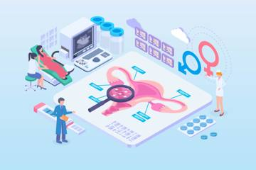
mar6-outline-12.jpg
pregnant-woman-caressing-her-belly-with-sonography-2021-08-27-09-21-50-utc-1-scaled-e1662194618865.jpg
pregnant-woman-caressing-her-belly-with-sonography-2021-08-27-09-21-50-utc-1-scaled-e1662194651966.jpg
pregnant-woman-caressing-her-belly-with-sonography-2021-08-27-09-21-50-utc-1.jpg
pregnant-woman-caressing-her-belly-with-sonography-2021-08-27-09-21-50-utc.jpg
pregnant-woman-caressing-her-belly-with-sonography-2021-08-27-21-14-36-utc.jpg
preparation-for-blood-test-with-beautiful-young-bl-2021-08-26-15-53-29-utc.jpg
problem-hair-loss-concept-losing-hair-on-hairbrus-2022-02-01-19-52-17-utc.jpg
various-superfoods-and-healthy-food-supplement-2022-04-06-19-08-04-utc.jpg
young-women-with-problematic-skin-and-pimples-on-h-2022-01-12-16-51-47-utc.jpg
coronavirus-cells-in-microscopic-view-virus-2021-08-27-15-27-33-utc-scaled-e1662195202403.jpg
healthcare-professional-giving-an-injection-to-a-p-2021-09-03-10-09-38-utc-scaled-pptq1hzpnasoktd2rqjnseqxhq07hgf2x61kwic6ww.jpg
healthcare-professional-giving-an-injection-to-a-p-2021-09-03-10-09-38-utc-scaled-pptq1hzpnasyt417xrvw1ynxon8b4eeo7wshwzlo1s.jpg
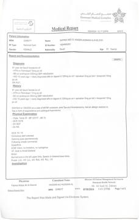
IMG_3531-235045e50e846cdb6e9f235dba8eec43.jpeg
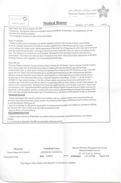
IMG_3532-de806390e8ac1f5179d1489a19418a65.jpeg
1715686559367-af11136f1210891adf92c22bd734e597.jpeg
2-8b7532cb5b4f837f199d4e20806ccb0d.jpeg
3-9fdfa1d937380a24c037818f281872f2.jpeg
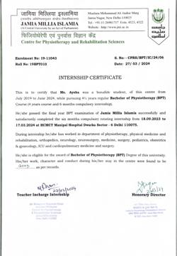
4CD7EEA0-F472-47BA-9023-1E438D87CBCB-fa983822fb9a62e2ef27391835d15213.jpeg
5149B5C7-BFFB-4F18-93AD-C40D8259C240-c522ad8121019d5d5087035ccad51ad6.jpeg
57BC5E8B-3D48-4B1F-A4DF-35E893E3220A-389218109c0fe51aa9c10aad45d05373.jpeg
88341314-491C-4FE6-9334-9CE6172D39EE-44d80b0382bae6a6f852f7fe249663c4.jpeg
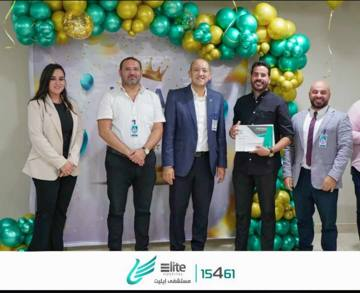
IMG_6258-b539e9848d3f1efcad363f8254f7ceab.jpeg
IMG_6445-f483b8bc5a864a9066c9fb79ef0f9974.jpeg
KSA-REGISTRATION-3d363c4ca34b61150db05778afbb9a32.jpeg
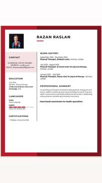
WhatsApp-Image-2023-10-30-at-2.42.59-PM-4b20b2d0881ddcb642edbc03df923d7b.jpeg
bg-logo-free-img.png
client3-free-img-4.png
discount-free-img.png
divider-free-img.png
favicon-free-img.png
logo-free-img.png
logo@2x-free-img.png
quote-free-img.png

aroma-yoga.png
bb-1.png
business-awards.png
cross-fit-logo.png
flying-yoga.png

hatha-yoga.png

intuitive-yoga.png

kundalini-yoga.png
sq-lite.png
vinyasa-yoga.png
yoga-slow.png
7f5E0rE0_400x400-removebg-preview-1.png

7f5E0rE0_400x400-removebg-preview.png
IMG-20220516-WA0007-removebg-preview.png
IMG-20220516-WA0008-removebg-preview.png

asset-1-1.png
asset-1.png
asset-2-1.png

asset-2.png
cropped-IMG-20220516-WA0007-removebg-preview.png
Group-1-3.png
Group-10.png
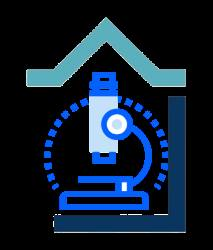
Group-11.png
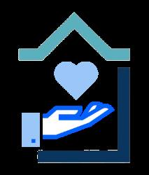
Group-12.png
Group-13.png
Group-14.png
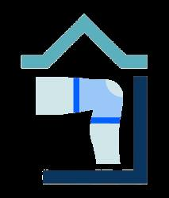
Group-15.png
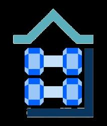
Group-16.png
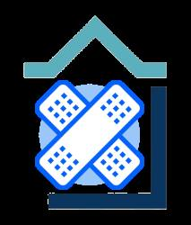
Group-2-1.png
Group-3-1.png
Group-4-1.png
Group-5-1.png
Group-6-1.png
Group-7-1.png
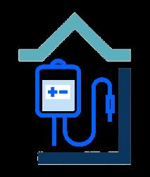
Group-8-1.png
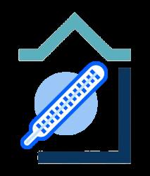
Group-9.png
icon_600de434d532c.png
weight-6.png
weight-7.png
weight-8.png
x3jxkEmT_400x400-removebg-preview.png
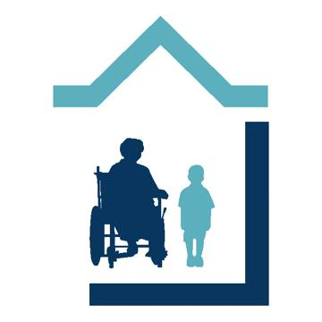
01.png
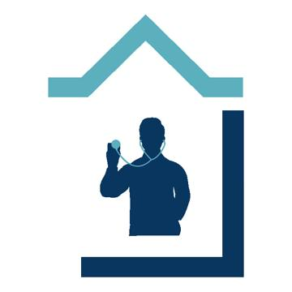
02.png
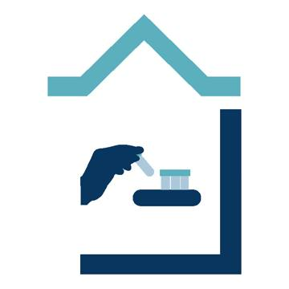
03.png
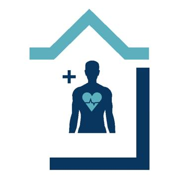
04.png
05.png
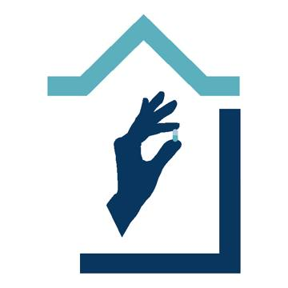
06.png
08.png
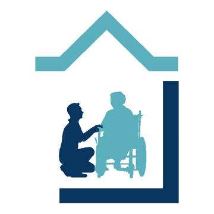
09.png
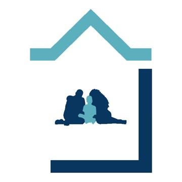
10.png
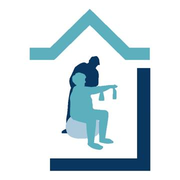
11.png
12.png
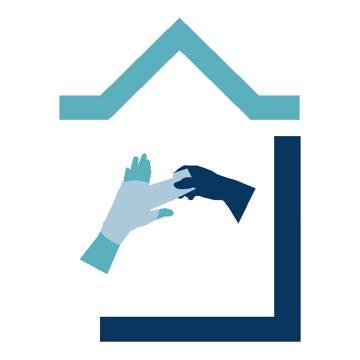
13.png
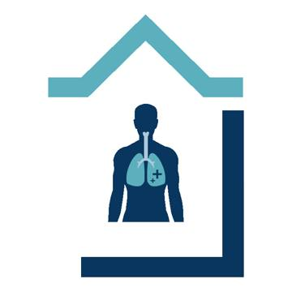
14.png
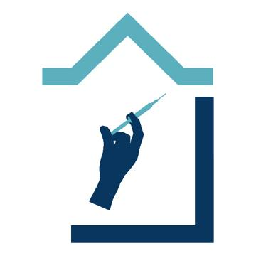
15.png
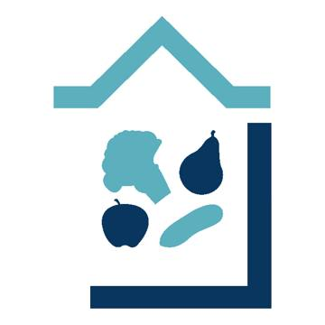
2-07.png
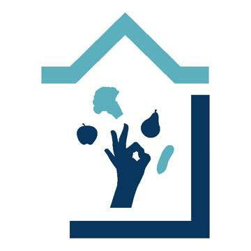
3-07.png
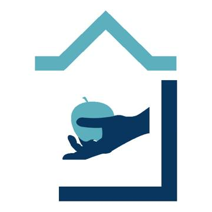
4-07.png
Comprehensive-Adult-Pediatric-Services-01.png
Curative-Services-02.png
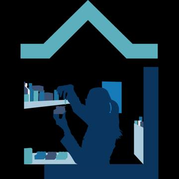
Diagnostic-Lab-Testing-03.png
Disease-Management-04.png
Doctor-Visiting-Physician-Oversight-05.png
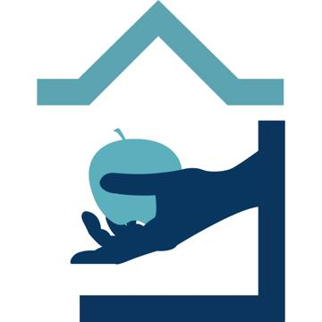
Hospital-Icon-Rev-16.png
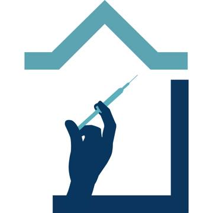
Hospital-Icon-Rev-18.png
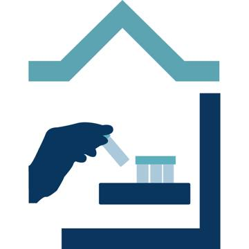
Hospital-Icon-Rev-19.png
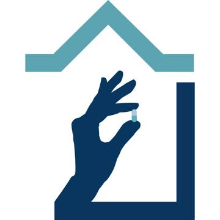
Hospital-Icon-Rev-20.png
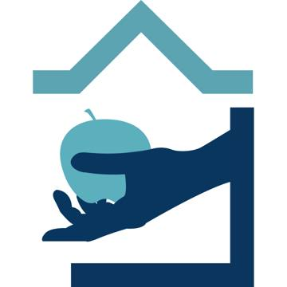
Hospital-Icon-Rev-21.png
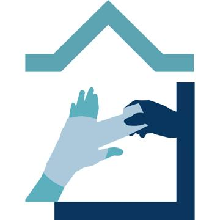
Hospital-Icon-Rev-22-1.png

Hospital-Icon-Rev-22.png
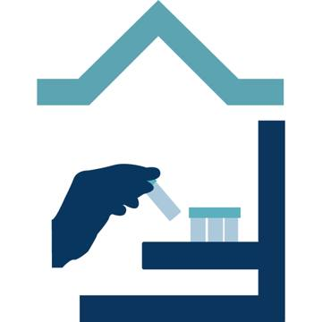
Hospital-Icon-Rev-24.png
Immunization-and-Essential-Vaccination-15.png
Medication-Management-06.png
Nutrition-Management-07.png
Pain-Management-08.png
Palliative-Services-09.png
Patient-Family-Education-10.png
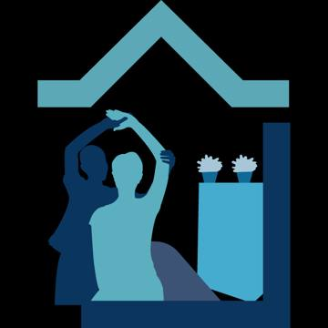
Physiotherapy-and-rehabilitation-11.png
Respiratory-care-14.png
Skilled-Nursing-12.png
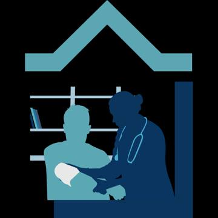
Wound-Care-13.png
images-removebg-preview.png
Picture1-22-8-18x7.png
Picture1-22-8.png
085110.png
085323.png
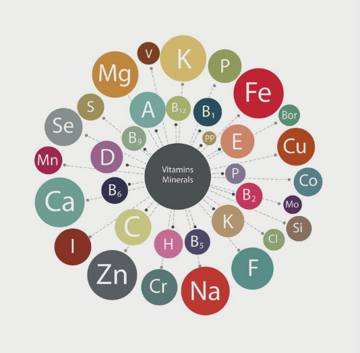
085423.png
085806.png
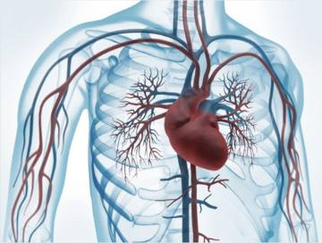
085911.png
09-12-085230-18x9.png
09-12-085230.png
090035.png
090153.png
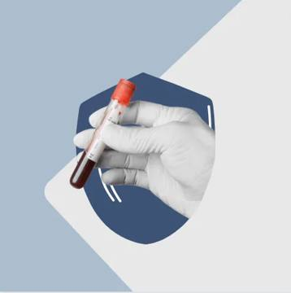
090413.webp
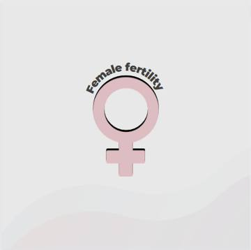
090706.png
090739.png
2022-09-12-085519.png
Disease-Management-04-prue7qpjgn5e2iilnk3uzi56b3abzxudsyuf9odmo0.png

Disease-Management-04-prue7qpjgn5k7hpvydpljmw6f8tldpfql0hrvkc45c.png
Disease-Management-04-prue7qplwcpaibcs4230pkwvq8cg5fwt5mog4g8no0.png
Disease-Management-04-prue7qpmia3ibbfnbiilrmc28wg9hbio3iz175h9ok.png
divider-free-img-pphow8vwrh9vyt1s62r5n5jaeya1f4uzlr9h7j8vbu.png
weight-20-ppktus3jyg1wau6kguw1tz7p82uo6ipu18af0tr8n8.png
weight-6-ppod8wjh0i3yf0kyq8gqbooxcyflunb58flv0hv6nm.png
weight-7-ppod8xhb7c58qmjlkqvcw6gdycaz2cevkk9chrts74.png
weight-ppod8tpyg003g6p26p8um7ejksti7jzy81neknzclg.png
IMG_8884-e5e52ebd9dc397f1bea988cece6ecf68.png
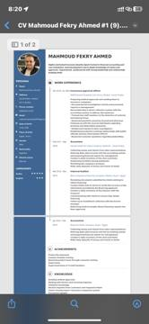
IMG_3206-6a8e233037cb44a0882074e17c6bde9b.png